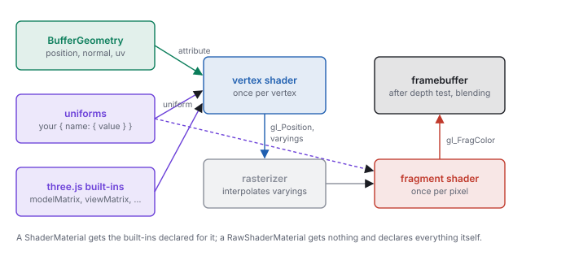
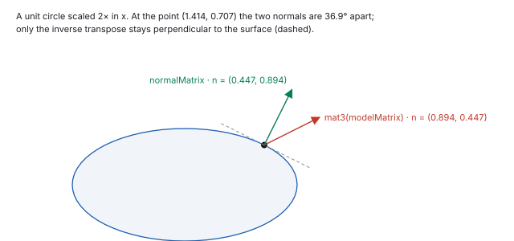

This chapter links to the course’s interactive demos and uses MathJax for its formulas. Read it through the course website (or download the file and open it in a browser); a Canvas inline preview will reach neither the demos nor the math. All chapters.
ShaderMaterial, the attributes, uniforms and varyings that connect them, what three.js declares for you and what a RawShaderMaterial leaves to you, per-pixel lighting with the normal transformed correctly, colour spaces, textures, render state, and how to read a shader error. Read after the WebGL chapter and before HW5; the Unity shader chapter covers the same ground in HLSL.
A shader is a small program that the graphics card runs once per vertex or once per pixel, in parallel, with
no memory of the other vertices or pixels. three.js writes the shaders for its built-in materials; a
ShaderMaterial lets you write your own in GLSL, the shading language of OpenGL and WebGL, while
three.js still supplies the matrices, the mesh’s attributes and the colour conversion. Everything the
illumination and texture chapters compute per pixel is written here, which is why the homework’s lit
sphere (HW5) is a shader. This chapter covers the language as far as the course needs it and the contract
between three.js and your code; it leaves out three.js’s node-based materials, compute shaders and
WebGPU.
For each mesh, the graphics card runs the vertex shader once per vertex. It reads that
vertex’s attributes and must write gl_Position, the clip-space position of
the viewing chapter (\(P\,V\,M\,\mathbf{p}\), before the divide by
\(w\)). The fixed-function stages then clip, divide, map to the viewport and rasterize each triangle into
pixels, interpolating whatever else the vertex shader wrote, perspective-correctly
(the rasterization chapter). The fragment
shader runs once per covered pixel, reads the interpolated values and writes a colour; the depth
test and blending decide what reaches the framebuffer.

ShaderMaterial gets the built-ins declared for it; a RawShaderMaterial declares everything itself.
A ShaderMaterial is two strings of GLSL and an object of uniforms. The smallest useful one paints
a mesh a single colour:
const material = new THREE.ShaderMaterial({
uniforms: { uTint: { value: new THREE.Color(0.2, 0.6, 1.0) } },
vertexShader: VERTEX,
fragmentShader: FRAGMENT,
});
scene.add(new THREE.Mesh(new THREE.SphereGeometry(1, 32, 16), material));
// VERTEX: position is the attribute; the three matrices are declared by three.js
void main() {
gl_Position = projectionMatrix * modelViewMatrix * vec4(position, 1.0);
}
// FRAGMENT: the uniform's name and type match the JavaScript key
uniform vec3 uTint;
void main() {
gl_FragColor = vec4(uTint, 1.0);
#include <colorspace_fragment>
}
vec4(position, 1.0) makes the point homogeneous (\(w = 1\)) and the product is the clip position.
The uniform is declared in GLSL and given a value in JavaScript; three.js matches them by name each time it
draws. The #include line asks three.js to paste in its output colour conversion (Section 7).
Nothing else is needed: the attribute position and the matrices are declared by three.js
(Section 4).
The strings are usually written in the same JavaScript file as template literals, between backquotes, often
tagged with a /* glsl */ comment so an editor highlights them. three.js compiles them the first
time the mesh is drawn, and recompiles only when the strings or the material’s defines
change; changing a uniform’s value costs nothing.
GLSL looks like C with vectors. The parts the course uses fit in one table.
| feature | GLSL | note |
|---|---|---|
| scalars | float, int, bool | no automatic conversion: 1 is an int and float x = 1; is an error; write 1.0 |
| vectors | vec2, vec3, vec4 | v.x, v.xyz, v.rgb, v.zyx (a swizzle: any components in any order); vec4(v3, 1.0) extends |
| matrices | mat3, mat4 | column-major, like three.js; m * v is \(M\mathbf{v}\); m[2] is a column; mat3(m4) takes the upper-left \(3\times3\) |
| arithmetic | + - * / | component-wise on vectors (a * b of two vec3s multiplies per component, the way colours combine); a scalar times a vector scales it |
| geometry | dot, cross, length, normalize, reflect(i, n) | reflect takes the incoming direction: \(\mathbf{i} - 2(\mathbf{n}\cdot\mathbf{i})\mathbf{n}\), so the mirror of the light direction \(\mathbf{l}\) is reflect(-l, n) |
| shaping | max, min, clamp, mix(a, b, t), step, smoothstep, pow | pow(x, y) is undefined for \(x < 0\); clamp first |
| matrix functions | transpose, inverse | available because three.js compiles a ShaderMaterial as GLSL ES 3.00 (WebGL 2); costly per vertex |
three.js compiles a ShaderMaterial as GLSL ES 3.00 but lets you write in the older GLSL ES 1.00
spelling: it adds #define lines so that attribute, varying,
texture2D and gl_FragColor mean their 3.00 equivalents (in,
out, texture, an output variable). This chapter uses the older spelling throughout,
as three.js’s own shaders do.
highp (32-bit),
mediump or lowp. A ShaderMaterial gets precision highp float;
and the same for int and the sampler types prepended for it (or the best the device supports);
a RawShaderMaterial gets nothing and fails to compile without the line.
vec3 c = uTint * 0.5; gl_FragColor = c;
fails because gl_FragColor is a vec4; the fix is
gl_FragColor = vec4(c, 1.0);. Section 10 shows the error message this produces and how to find
the line.
Before compiling a ShaderMaterial, three.js prepends a block of declarations to each string. The
ones a course shader uses are these:
| name | type | meaning | in |
|---|---|---|---|
position, normal, uv | attribute vec3, vec3, vec2 | the geometry’s arrays, in object space | vertex |
modelMatrix | mat4 | \(M\): the mesh’s matrixWorld, object to world | vertex |
viewMatrix | mat4 | \(V\): the camera’s matrixWorldInverse | both |
modelViewMatrix | mat4 | \(V M\), object to view | vertex |
projectionMatrix | mat4 | \(P\) | vertex |
normalMatrix | mat3 | the inverse transpose of the upper \(3\times3\) of \(VM\): for normals in view space | vertex |
cameraPosition | vec3 | the camera’s position in world space | both |
So a world-space lighting shader has \(M\), \(V\), \(P\) and the eye position for free; what it lacks is a
normal matrix for world space, since three.js’s normalMatrix is built from
\(VM\). Section 6 supplies one.
ShaderMaterial | RawShaderMaterial | |
|---|---|---|
| declarations above | prepended | none: declare every attribute and uniform yourself |
| precision line | prepended | write it |
| GLSL version | ES 3.00, with the 1.00 spellings defined | ES 1.00 unless glslVersion: THREE.GLSL3 is set |
#include <…> of three.js chunks | available | available, but the functions the chunks call are not declared |
| values of the built-in matrices | set every draw | set every draw, if you declare them by the same names |
The raw form is what a WebGL program without three.js would contain, and nothing is hidden in it:
attribute vec3 position;
uniform mat4 modelViewMatrix;
uniform mat4 projectionMatrix;
void main() {
gl_Position = projectionMatrix * modelViewMatrix * vec4(position, 1.0);
}
precision highp float;
uniform vec3 uTint;
void main() {
gl_FragColor = vec4(uTint, 1.0);
}
Each entry of uniforms is an object with a value; three.js uploads the value to the
GLSL uniform of the same name at every draw. The JavaScript type decides the GLSL type it can fill:
| JavaScript value | GLSL uniform |
|---|---|
| a number | float (or int) |
THREE.Vector2, Vector3, Vector4 | vec2, vec3, vec4 |
THREE.Color | vec3, its linear \(r, g, b\) |
THREE.Matrix3, Matrix4 | mat3, mat4, column-major as stored |
THREE.Texture | sampler2D |
| a boolean | bool |
// once per frame, or whenever the value changes; no needsUpdate, no recompile material.uniforms.uLightWorld.value.copy(lamp.position); material.uniforms.uTime.value = t / 1000;
uniforms object or a uniform’s wrapper (material.uniforms.uLightWorld =
lamp.position) breaks the link three.js keeps to it; change .value, or the contents of
.value, instead. A uniform declared in GLSL but missing from uniforms is not an
error: it keeps the value 0 (a black colour, a zero matrix that collapses every vertex to one point), and no
message appears. And a uniform declared but never used is removed by the compiler, so setting it has no
effect and also raises no error.
Per-pixel lighting needs, at each pixel, the surface point, the surface normal and the light’s
position in one space. World space is the natural choice: the light’s position comes from the scene,
and cameraPosition is the eye. The vertex shader carries the world position and the world normal
as varyings; the fragment shader builds \(\mathbf{L}\), clamps \(\mathbf{N}\cdot\mathbf{L}\) and multiplies.
It is the illumination chapter’s diffuse term:
uniform mat3 uNormalWorld; // inverse transpose of mat3(modelMatrix), set from JavaScript
varying vec3 vWorldPos;
varying vec3 vWorldNormal;
void main() {
vec4 world = modelMatrix * vec4(position, 1.0); // the point, in world space
vWorldPos = world.xyz;
vWorldNormal = uNormalWorld * normal; // the normal, in world space
gl_Position = projectionMatrix * viewMatrix * world;
}
uniform vec3 uLightWorld; // the light's position, world space
uniform vec3 uAlbedo; // diffuse reflectance, linear
varying vec3 vWorldPos;
varying vec3 vWorldNormal;
void main() {
vec3 n = normalize(vWorldNormal); // interpolation shortens it
vec3 l = normalize(uLightWorld - vWorldPos); // direction to the light, per pixel
vec3 c = uAlbedo * max(dot(n, l), 0.0); // max(0, N·L)
gl_FragColor = vec4(c, 1.0);
#include <colorspace_fragment>
}
// JavaScript: the world normal matrix, refreshed before each draw
uniforms.uNormalWorld = { value: new THREE.Matrix3() };
mesh.onBeforeRender = () => material.uniforms.uNormalWorld.value.getNormalMatrix(mesh.matrixWorld);
getNormalMatrix(m) computes \(\big((M_{3\times3})^{-1}\big)^{\top}\) on the CPU, once per draw. The
alternative, transpose(inverse(mat3(modelMatrix))) * normal in the vertex shader, gives the same
vector and inverts the same matrix once per vertex. The normal is renormalized in the fragment shader because
interpolating two unit vectors gives a shorter one in between.

mat3(modelMatrix) * normal
Multiplying the normal by the model matrix itself is exact for rotations and translations and wrong under a
non-uniform scale, the trap of the illumination chapter. Take the point
\((0.707, 0.707, 0)\) on a unit circle with normal \((0.707, 0.707, 0)\), and scale the object \(2\times\) in
\(x\). The point moves to \((1.414, 0.707, 0)\). mat3(modelMatrix) * normal, normalized, is
\((0.894, 0.447, 0)\); the inverse transpose gives \((0.447, 0.894, 0)\). The two are \(36.9^\circ\) apart, and
the first has a dot of \(-0.6\) with the surface’s tangent where the second has 0. These are the numbers
of the Unity shader chapter’s finite-difference normal, which
is the same mistake in another form. A sphere scaled \((2, 1, 1)\) shows it: its highlights and terminator
sit where a sphere’s would, not where the ellipsoid’s should. For a uniform scale the two agree
after normalizing, which is why the shortcut often goes unnoticed.
normalMatrix takes normals to view space. Combined with a world-space
light position, it gives lighting that turns with the camera: correct when the camera is at its starting pose,
wrong after an orbit. Either light in view space throughout (transform the light by viewMatrix,
take the eye at the origin) or in world space throughout, as above.
The specular term of the illumination chapter is a few more lines in the fragment shader: the direction to
the eye from cameraPosition and the world position, the mirror direction with
reflect, and the clamped cosine raised to the shininess with pow. An ambient term is
a constant added before the output. Every one of them is computed per pixel from interpolated vectors, which
is Phong shading in the sense of the meshes chapter; computing the colour in
the vertex shader and interpolating it would be Gouraud shading.
Lighting adds and multiplies light, so it must run on linear values (the colour chapter); screens expect sRGB-encoded values (the transfer function). three.js keeps the two apart for you on the way in and asks you to opt in on the way out:
THREE.Color stores linear components (new THREE.Color(0x808080) holds 0.2159), and a texture marked colorSpace = THREE.SRGBColorSpace is decoded to linear by the graphics card when it is sampled. A plain Vector3 uniform is passed as it is.#include <colorspace_fragment>, as the last line of main, expands to gl_FragColor = linearToOutputTexel( gl_FragColor );, which encodes to the renderer’s outputColorSpace (sRGB by default). Without the line, the shader’s number is written to the screen as the code value.Either convention is consistent if its inputs are chosen for it: linear inputs with the output conversion, or values meant as screen codes with none. The error is the mix, linear inputs without the conversion, which makes every mid-tone too dark, or screen codes with the conversion, which makes them too light.
css551/try-shader.html, serve the folder, open
http://localhost:8000/try-shader.html and read the console. It draws a plane facing the camera,
lit by a light at \((0, 1.732, 1)\), so \(\mathbf{N}\cdot\mathbf{L} = 0.5\) at the origin, and reads back the
centre pixel.
<!doctype html>
<script type="module">
import * as THREE from './lib/vendor/three.module.js';
const renderer = new THREE.WebGLRenderer();
renderer.setSize(64, 64);
document.body.appendChild(renderer.domElement);
const scene = new THREE.Scene();
const camera = new THREE.PerspectiveCamera(45, 1, 0.1, 10);
camera.position.z = 3;
const mat = new THREE.ShaderMaterial({
uniforms: {
uLightWorld: { value: new THREE.Vector3(0, 1.732, 1) },
uAlbedo: { value: new THREE.Vector3(1, 1, 1) },
},
vertexShader: `
varying vec3 vWorldPos;
void main() {
vec4 world = modelMatrix * vec4(position, 1.0);
vWorldPos = world.xyz;
gl_Position = projectionMatrix * viewMatrix * world;
}`,
fragmentShader: `
uniform vec3 uLightWorld;
uniform vec3 uAlbedo;
varying vec3 vWorldPos;
void main() {
vec3 n = vec3(0.0, 0.0, 1.0);
vec3 l = normalize(uLightWorld - vWorldPos);
gl_FragColor = vec4(uAlbedo * max(dot(n, l), 0.0), 1.0);
#include <colorspace_fragment>
}`,
});
scene.add(new THREE.Mesh(new THREE.PlaneGeometry(2, 2), mat));
renderer.render(scene, camera);
const gl = renderer.getContext();
const px = new Uint8Array(4);
gl.readPixels(32, 32, 1, 1, gl.RGBA, gl.UNSIGNED_BYTE, px);
console.log('centre pixel', px.join(', '));
</script>
The console prints centre pixel 188, 188, 188, 255. Delete the #include line and
reload: centre pixel 129, 129, 129, 255. The pixel’s centre is half a pixel off the axis,
where \(\mathbf{N}\cdot\mathbf{L} = 0.5042\): without the conversion that is written as \(0.5042 \times 255 =
128.6\), and with it the sRGB encoding of 0.5042, \(188.2\). A surface lit at \(60^\circ\) reflects half the
light of one lit head-on; on the screen, half the light is code 188, not 128.
A texture reaches a shader as a sampler2D uniform, and texture2D(sampler, uv) returns
the filtered colour at a texture coordinate, \((0, 0)\) at the bottom-left of the image and \((1, 1)\) at the
top-right. The geometry’s uv attribute is passed through as a varying:
varying vec2 vUv;
void main() {
vUv = uv;
gl_Position = projectionMatrix * modelViewMatrix * vec4(position, 1.0);
}
uniform sampler2D uMap;
uniform mat3 uPlace; // a 2D placement: scale, rotate, offset, as in the texture chapter
varying vec2 vUv;
void main() {
vec2 st = (uPlace * vec3(vUv, 1.0)).xy; // homogeneous 2D: the third component is 1
gl_FragColor = texture2D(uMap, st);
#include <colorspace_fragment>
}
const tex = new THREE.TextureLoader().load('checker.png');
tex.colorSpace = THREE.SRGBColorSpace; // an image of colours: decode to linear when sampled
tex.wrapS = tex.wrapT = THREE.RepeatWrapping; // the default is ClampToEdgeWrapping
material.uniforms.uMap = { value: tex };
The placement matrix is the texture chapter’s \(3\times3\)
homogeneous transform of the plane, applied to the coordinate before the lookup; the library’s
uvMat3 builds one, and Matrix3.fromArray carries it to the uniform. The sampling
options are properties of the texture, not of the shader: wrapS and wrapT
(ClampToEdgeWrapping by default, RepeatWrapping, MirroredRepeatWrapping),
magFilter (LinearFilter by default, or NearestFilter) and
minFilter (LinearMipmapLinearFilter by default, trilinear filtering over the mipmaps
of the minification section). anisotropy is 1 by
default; raise it for a floor seen at a grazing angle. Data textures (normal maps, heights) keep the default
colour space, since their numbers are not colours.
new THREE.TextureLoader().load(url, () => draw())).
And flipY is true by default, which is what makes the image’s top row land at
\(v = 1\); a texture drawn from a typed array or a render target is not flipped, so the same uv shows it
upside down relative to the loaded image.
What happens to a fragment after the shader is set on the material, not in GLSL. The defaults of a
ShaderMaterial draw opaque front faces with the depth test and depth writes on.
| property | default | meaning |
|---|---|---|
side | FrontSide | back faces (clockwise on screen) are culled; BackSide draws only them, DoubleSide both. A double-sided surface lit from behind needs gl_FrontFacing to flip its normal |
depthTest | true | the z-buffer test of the rasterization chapter: a fragment farther than what is stored is discarded |
depthWrite | true | a surviving fragment writes its depth; turned off for transparent surfaces so they do not hide what is drawn after them |
transparent | false | when true, blending is on and three.js draws the mesh after the opaque ones, sorted back to front by object |
blending | NormalBlending | with transparent, \(c = \alpha\,c_{\text{src}} + (1 - \alpha)\,c_{\text{dst}}\) (blending); AdditiveBlending adds, for glows and particles. Ignored while transparent is false |
wireframe | false | draws the triangles’ edges as lines |
A fragment shader can also refuse a pixel with discard;, which writes neither colour nor depth: a
cut-out leaf from an alpha texture, or a clipping plane. Sorting is per object, not per triangle, so two
interpenetrating transparent meshes, or one concave transparent mesh, can still blend in the wrong order.
A shader cannot print. Two techniques replace console.log: read the compiler’s message when it
fails, and paint the value you doubt as a colour when it runs.
uniform vec3 uTint;
void main() {
vec3 c = uTint * 0.5;
gl_FragColor = c;
}
Nothing is drawn, and the console shows (in headless Chromium, three.js r170):
THREE.WebGLProgram: Shader Error 0 - VALIDATE_STATUS false
Material Name:
Material Type: ShaderMaterial
Program Info Log: Fragment shader is not compiled.
FRAGMENT
ERROR: 0:60: '=' : dimension mismatch
ERROR: 0:60: 'assign' : cannot convert from 'highp 3-component vector of float' to 'out highp 4-component vector of float'
55: }
56:
57: uniform vec3 uTint;
58: void main() {
59: vec3 c = uTint * 0.5;
> 60: gl_FragColor = c;
61: }
followed by WebGL: INVALID_OPERATION: useProgram: program not valid. The line number counts the
56 lines three.js prepended, so line 60 is line 4 of your string; the listing under the message marks it with
>. The out highp 4-component vector is gl_FragColor after the
GLSL 3.00 #define of Section 3. Read the first error; the rest usually follow from it.
When the shader compiles but the picture is wrong, replace the output with the quantity in doubt, mapped into \([0, 1]\):
varying vec3 vWorldPos;
varying vec3 vWorldNormal;
void main() {
vec3 n = normalize(vWorldNormal);
gl_FragColor = vec4(0.5 * n + 0.5, 1.0); // a unit vector, components -1..1, as a colour
}
gl_FragColor = vec4(vec3(max(dot(n, l), 0.0)), 1.0); shows \(\mathbf{N}\cdot\mathbf{L}\) alone. Black where you expect light is a light in the wrong place or a normal pointing in.fract(vWorldPos) draws a grid that should stay fixed to the world as the camera moves.gl_FragColor = vec4(1.0, 0.0, 1.0, 1.0);: if the mesh is not magenta, the problem is upstream of the fragment shader (the mesh is not in the scene, is culled, or is outside the frustum).colorspace_fragment line while painting debug values; otherwise a normal component of
0.5 is shown as code 188 rather than 128, and the colours do not read as the numbers they stand for. The
homework runner’s HW5 skeleton paints normals this way until the lighting is written.
gl_Position with modelMatrix, viewMatrix and projectionMatrix, and say why the order cannot be changed.
projectionMatrix * viewMatrix * modelMatrix * vec4(position, 1.0): \(P V M \mathbf{p}\) with column vectors applies \(M\) first. Matrix products do not commute, so another order applies the transforms in another sequence.
float k = 2; (b) vec3 a = vec3(1.0); (c) vec4 c = vec4(n, 1); with n a vec3 (d) vec2 t = v.xz; with v a vec3.
int is not converted to a float. (b) fills all three components; (c) is allowed because a constructor converts its arguments; (d) is a swizzle.
RawShaderMaterial uses the ShaderMaterial vertex shader of Section 2 unchanged. What does the compiler report?
projectionMatrix, modelViewMatrix and position are undeclared: a raw material gets none of the declarations of Section 4. Add the three declarations, as in the raw example.
mat3(modelMatrix) * normal and of the inverse transpose, and the angle between them.
normalize(normalMatrix * normal) and a world-space uLightWorld. The sphere looks right at first and the lit side drifts as the camera orbits. Explain, and give two fixes.
normalMatrix is built from \(VM\), so the normal is in view space and the light in world space; the mismatch changes with \(V\). Either use a world normal matrix (Section 6) or move the light into view space with (viewMatrix * vec4(uLightWorld, 1.0)).xyz and use the view-space position of the point.
colorspace_fragment line. What code value reaches the screen (sRGB: \(1.055\,x^{1/2.4} - 0.055\) for \(x > 0.0031308\))? Without the line?
uPlace is a scale by 4 in both directions with RepeatWrapping. How many copies of the image cover the quad, and what changes with ClampToEdgeWrapping?
transparent: true and opacity 0.4 is drawn and its back half is missing, while an opaque cube behind it shows through correctly. Which property explains the missing back half, and what are the costs of changing it?
side is FrontSide, so the inner back faces are culled. DoubleSide draws them, but in one draw call, in triangle order, so some back faces blend over front faces already drawn and the result depends on the mesh’s triangle order. Drawing the sphere twice, BackSide first and FrontSide second, gives the right order for a convex shape.